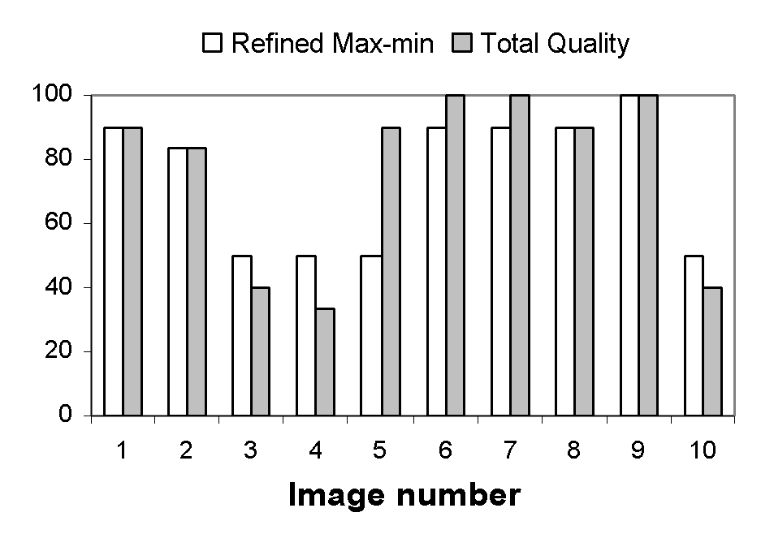
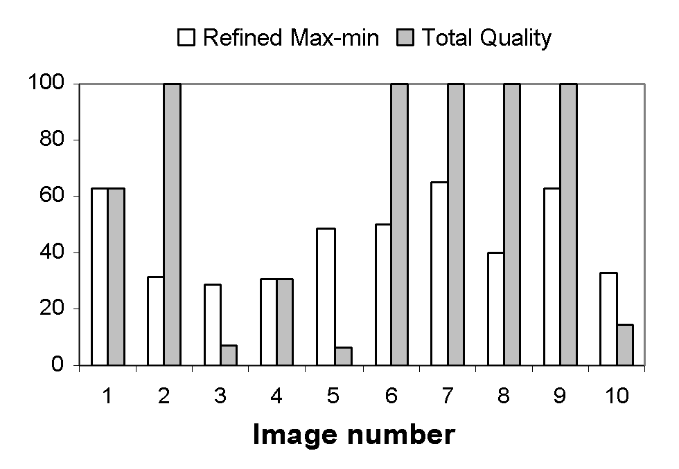
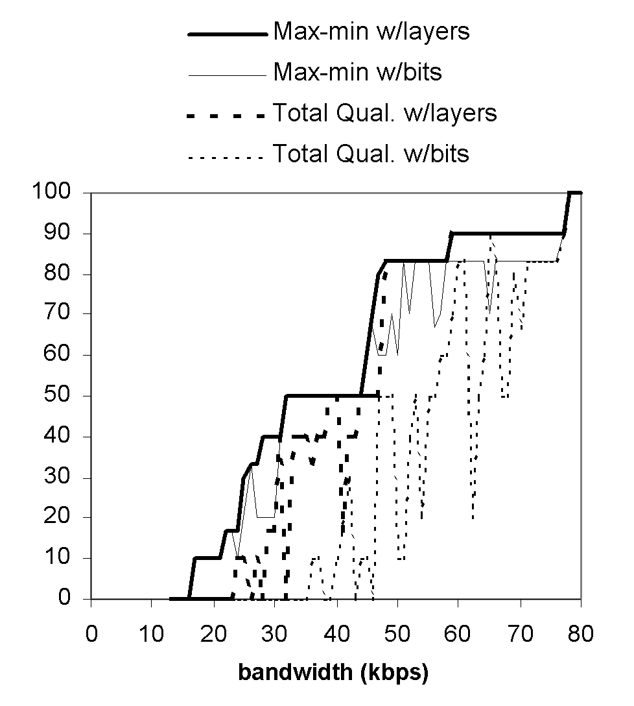
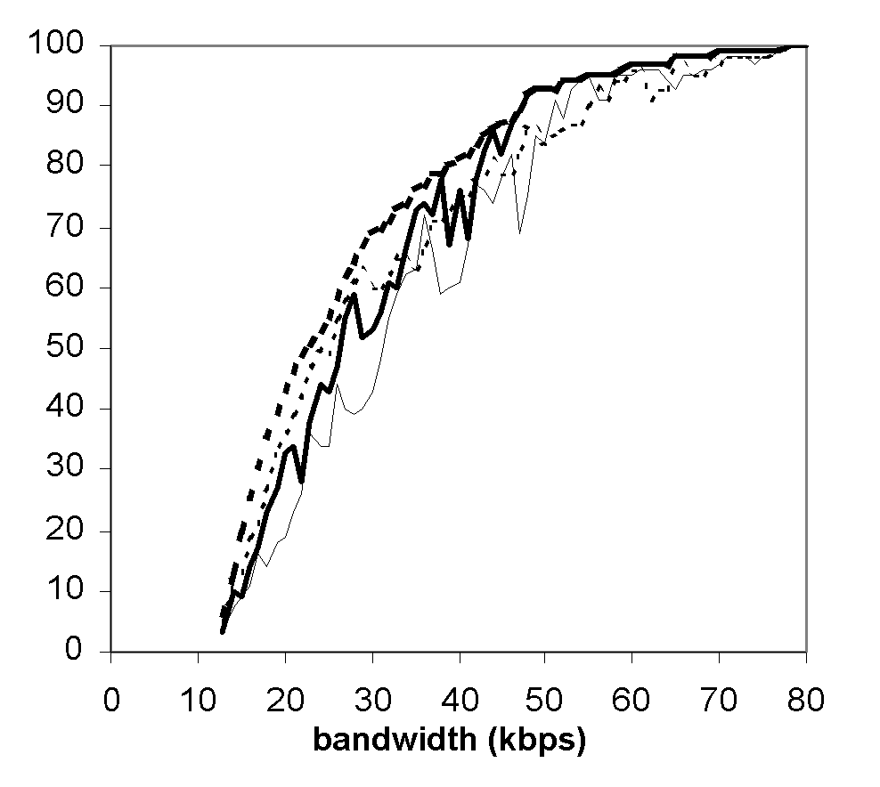

In the context of communication networks with no QoS guarantees, we describe the problem of streaming layer encoded multimedia presentation data as a two-phase decision problem. We propose a measure of presentation quality called the refined max-min metric that yields a computationally inexpensive algorithm for determining an optimal transmission policy needed within the second decision making phase. We compare this metric with a more traditional one, called the total quality metric, which yields an optimization problem that can be solved with dynamic programming. Using a slide show presentation with a randomly generated sequence of layer-encoded JPEG images, we compare the refined max-min criterion with the total quality criterion.
The advantage of layer-encoding multimedia presentation data is that some layers can be dropped to reduce the size of the data representation, which will increase the speed at which the presentation can be transported over a bandwidth-limited network. With faster transmission, the end user is saved from waiting for presentation data to be pre-fetched into a playback buffer. However, fewer layers means lower quality, so we would like to send as many layers as possible while keeping the start up latency to a minimum.
Frequently a distinction is made between continuous and discrete media; audio and video are classified as continuous, while still images and text are classified as discrete. The data comprising a discrete object must arrive in its entirety at the client prior to its rendering interval, but the rendering of a continuous media object can be started before all of its data arrives at the client. In our approach, we decompose continuous media into separate discrete objects with relatively short rendering periods. This allows us to treat all data components of the presentation as atomic units with arrival deadlines at the client equal to the starting point of their rendering intervals.
Let N represent the number of discrete objects in the presentation after decomposition of the continuous media, and let ti represent the starting point of the initial rendering interval of object i. We assume the objects are ordered by increasing values of their deadlines. We measure time relative to the start of the presentation, so that the presentation starts at time t=0.
We assume that a presentation comprised of only the first layer of each object represents a presentation of minimum acceptable quality. We will use the term base layer when referring to the first layer, and enhancement layer when referring to higher layers, which contribute to quality but are not required for achieving the minimum quality level. We let Li represent the number of layers in object i.
Our first priority is to minimize the start up delay for play out of only the base layers of the presentation. After establishing the minimum start up delay, our second priority is to improve the quality of the presentation by sending enhancement layers. Corresponding to these two priorities, we have two decision phases through which the application passes. In the first phase, the application simply sends base layers for the objects in the order of their first appearance in the presentation. While it is sending base layer data, it collects information about the available bandwidth and uses it to decide when to start playing the presentation. After the presentation starts playing, the application enters into the second phase in which it loops on the decision of which layer to send next.
The contribution of this paper is first to articulate the two-phase decision problem when streaming adaptive multimedia data, and second, to propose a new presentation quality metric called the refined max-min metric that yields a computationally inexpensive algorithm for efficiently determining the optimal layer to send in phase two. We compare this approach with a more traditional metric, called the total quality metric, which yields a decision problem that can be solved with dynamic programming. Using a slide show presentation with a randomly generated sequence of layer-encoded JPEG images, we compare the refined max-min criterion with the total quality criterion.
Because we are transmitting data over a network with no QoS guarantees, after a communication channel is established, the application does not know the rate at which it can transmit data from source to destination. For this reason, the application begins by transmitting only base layer data, which it stores in a pre-fetch buffer at the client until it determines that it can safely begin play out of the presentation without the threat of the presentation stalling. (We assume the client has a disk drive large enough to store any amount of pre-fetched data.)
While the application is transmitting base layers, it performs two other tasks in parallel. First, it records a packet transmission history, which it uses for predicting future bandwidth. Second, it loops on the decision whether to begin playing the presentation.
We do not assume any particular transport protocol, such as TCP or some UDP-based scheme. However, for whatever transport mechanism is employed, we assume the application has a reasonable method of estimating from the packet transmission history a lower bound for expected future bandwidth. We let B(a,b) represent a lower bound for the number of bits the application expects can be delivered from server to client in the interval [a,b].
Suppose the application has delivered the base layers of objects 1 through q-1 to the client, and is now considering whether to start play out. Let xi,j be the number of bits in the jth layer of object i. If the application starts play out now, all of the unsent base layers will arrive on-time if the cumulative bits needed at each deadline is less than or equal to the cumulative bits that can be delivered. Thus, the application starts play out if the following inequalities are satisfied:
xq,1 <= B(0,tq)
xq,1 + xq+1,1 <= B(0,tq+1)
...
xq,1 + ... + xN,1 <= B(0,tN)
If this system of inequalities is not satisfied, the application does not begin play out, but continues to pre-fetch additional base layers.
After the application gives the command to start playback, it transitions into phase two, in which it loops on the decision of which layer to send next. To make this decision, the application continues to record transmission statistics and refine its estimate of a lower bound on future bandwidth. With this lower bound, it determines a sequence of layers P (which we call a transmission policy) that can be delivered on-time (which we call feasibility) and that maximizes an objective measure of presentation quality Q(P). The first layer in the sequence comprising this policy is chosen to be transmitted next.
Suppose that the rendering of the first r objects have already started, so the application only needs to concern itself with scheduling the delivery of objects r + 1 to N. To simplify notation, we re-label these objects as 1 through M.
A transmission policy specifies the number of layers to send for each object, which we represent as an M-dimensional vector P whose ith component ji represents the number of layers of object i to send to the client. We call a policy feasible if all of the bits it sends arrive at the client prior to their deadlines.
Let bi = B(ti-1, ti) , the number of bits that can be transmitted between the deadlines ti-1 and ti. At each deadline, the cumulative number of bits needed must be less than or equal to the cumulative bits that will be transmitted. Thus, if we let yi(j) equal the unsent bits of object i that appear in layers 1 through j, then policy P is feasible if the following system of M inequalities hold.
y1(j1) <= b1
y1(j1) + y2(j2) <= b1 + b2
...
y1(j1) + ... + yM(jM) <= b1 + bM
Now that we have defined the set of feasible policies, we need to determine which of these policies are optimal, that is, which policies result in presentations with the best quality. In the following two sections, we consider two measures of overall presentation quality, and provide algorithms that converge to optimal policies.
In this and subsequent sections, we assume a general measure qi(j) for the quality of an individual object i when layers 1 through j are used for its rendering. One possible measure of overall presentation quality is simply to take the worst object quality. A feasible policy would then be optimal if it were to maximize the minimum quality across all objects in the presentation. We call this the max-min criterion.
Although the max-min criterion is a natural choice for a criterion of optimality, it typically provides policies that do not allocate all the available bandwidth. Consequently, sending additional layers for some objects may be possible, which, although not increasing the minimum quality, clearly improves the overall quality of the presentation. Also, less cumulative bandwidth in general will be available for transmitting objects with earlier deadlines, thus the minimum attainable quality will be dominated by bandwidth available for the early objects. We now consider a refined max-min criterion that overcomes these inadequacies.
We represent the overall quality of a presentation as a vector rather than a scalar, and define an ordering of these vectors. Let A = (j1 ,..., jM) and B = (k1 ,..., kM) be two feasible policies with quality vectors:
Q(A) = (q1(j1) ,..., qN(jM))
Q(B) = (q1(k1) ,..., qN(kM))
Now sort the elements in these quality vectors from lowest to highest to obtain the sorted quality vectors (a1 ,..., aM) and (b1 ,..., bM), respectively. We say that policy A has better quality than policy B if the sorted quality vectors are equal until some position k where the quality value of A is greater than that of B. That is, Q(A) > Q(B) if there exists a k such that ai = bi for i < k, but that ak > bk. A feasible policy A is said to be optimal if there does not exist another feasible policy B such that Q(A) < Q(B). We refer to this as the refined max-min criterion.
It is important to note that if a policy is optimal for the refined max-min criterion, then it is also optimal for the max-min criterion. However, the converse is not generally true. Thus, the refined max-min criterion is a more sensible measure for the overall quality of a presentation, because in addition to satisfying the max-min criterion, it better exploits the available bandwidth to improve the quality of the presentation.
We now present an algorithm that determines the optimal policy under the assumption that the quality values qi(j) are distinct for all values of i and j. Quality measures that utilize the length of time rendered, root mean square, or the number of bits, typically fulfill this assumption. The algorithm (Fig. 1) starts with a policy set to the layers that have already been sent to the client, and then enters a loop in which it tries to add a layer to the object with lowest quality. If adding a layer to this object results in a non-feasible policy, then its layers are held fixed, and it is removed from any further consideration. That this algorithm converges to an optimal policy is intuitively clear. (See [1] for a formal proof of convergence.)
P = seq. of sent layers
S = {1 ,..., N}
do while P != (Li ,..., LN) and S is not empty
find k in S s.t. qk(j_{k}) <= qi(ji) for all i in S
if (j1 ,..., jk+1 ,..., jN) is feasible then
jk = jk + 1
else
remove k from S
Figure 1. Refined max-min algorithm
For object quality measures that map into a relatively small range, such as qi(j) = j, this algorithm may not converge to an optimal policy, because it does not properly resolve quality ties. We propose (and evaluate in Sec. 6) the following tie-breaking heuristic: In the presence of a quality tie, choose the object whose next layer has the smallest number of bits. Intuitively, this heuristic makes sense, because we are improving the quality by one layer with the least expenditure of bandwidth.
A more traditional approach to the optimization problem would be to define presentation quality as the sum of the quality values of the individual objects. We refer to this measure as the presentation's total quality.
The maximization of Q(P) over the set of feasible polices can be formulated as a characteristic equation of dynamic programming. To see this, suppose we want to send objects m through M, and that we have s surplus bits of bandwidth available to do this, in addition to the bm ,..., bM bits that are available in the intervals terminating at deadlines tm ,..., tM. Define f(m,s) to be the maximum quality attainable for these objects. That is,
f(m,s) = max(qm(jm) + ... + qM(jM)),where the max is taken over all (jm ,..., jM) that satisfy the following deadline constraints:
ym(jm) <= s + bm
ym(jm) + ym+1(jm+1) <= s + bm + bm+1
...
ym(jm) + ... + yM(jM) <= s + bm + ... + bM
By definition, f(1,0) is the maximum quality for the presentation.
It can be shown that f has the following recursive form. (See [1] for a proof of this.)
For m = 1 ,..., M-1,
f(m,s) = max( qm(j) + f(m+1, s+bm-ym(j)) ),
where the maximization is taken over the set of all j such that ym(j) <= s + bm.
For m = M,
f(M,s) = max( qM(j) ),
where the maximization is taken over the set of all j such that yM(j) <= s + bM.
Standard dynamic programming techniques can be employed to determine in polynomial time the optimal policy from these equations [2].
We assembled a slide show presentation with 2 black and white and 8 color JPEG images in order to compare the refined max-min criterion with the total quality criterion under two different object quality measures. The black and white images were encoded into 6 layers, and the color images were encoded into 10 layers. The two object quality measures were a layer-oriented measure, which equates quality with the ratio of layers rendered to the total number of layers in the object, and a bit-oriented quality measure, which equates quality with the ratio of bits rendered to total bits from all layers. Note that under the bit-oriented measure, convergence to an optimal refined max-min policy is guaranteed.
Fig. 2 shows the percentage of layers sent for each of the ten objects in the presentation for the refined max-min and total quality criteria under the layer-oriented quality measure. The resulting policies of the two algorithms appear to agree in general regarding which images should be weak (in terms of percentage of layers rendered) and which should be strong. However, the refined max-min algorithm produces a presentation with more uniform image qualities.

Figure 2: Percentage of layers sent by criterion under the layer-oriented quality measure.
We can also see from Fig. 2 that the worst case object quality is 50 percent for the refined max-min criterion. The ordinary max-min criterion would have stopped at this point, generating a policy that transmits 50% of the layers for each object. The refined max-min criterion enables the presentation to display more layers than an ordinary max-min criterion while still respecting the max-min philosophy.
Fig. 3 shows the percentage of bits sent for each object under using the bit-oriented quality measure. Here the two algorithms give strikingly different policies. While the refined max-min algorithm continues to distribute relatively equal importance across all objects, the total quality algorithm selects a highly non-uniform distribution. The worst case object quality for the refined max-min criterion is approximately 30 percent of the object's bits, while that of the total quality criterion is less than 10 percent.

Figure 3: Percentage of layers sent by criterion under the bit-oriented quality measure.
In order to further examine the differences between the two criteria and the two quality measures, we computed the optimal policies for the sample presentation while varying the level of bandwidth. We plotted two different summary statistics: minimum percentage of layers rendered by bandwidth (Fig. 4), and average percentage of layers rendered by bandwidth (Fig. 5).

Figure 4: Minimum percentage of layers rendered by bandwidth.

Figure 5: Average percentage of layers rendered by bandwidth.
Fig. 4 demonstrates that the refined max-min criterion is superior to the total quality criterion with respect to minimizing the worst quality, which isn't surprising, because this objective is its primary motivation. It should also be noted that the layer-oriented quality measure performs better than the bit-oriented quality measure. There are a few points where the total quality criterion with the layer-oriented measure performs better than the refined max-min criterion with the bit-oriented measure, but in general the refined max-min criterion is better with both quality measures.
Fig. 5 shows the average percentage of layers rendered by bandwidth levels. Here the total quality criterion based on the layer-oriented quality measure is superior to the other methods, especially for the lower and mid-range bandwidths. The total quality criterion with the bit-oriented quality measure also appears to do well in the lower bandwidths, but gives weaker results for higher levels of bandwidth. At high levels of bandwidth, the various methods converge, but the refined max-min criterion based on the layer-oriented quality measure converges the most quickly. The refined max-min criterion with the bit-oriented quality measure is the clear loser in this comparison.
In summary, the four objectives can produce rather different optimal policies. We believe that the refined max-min criterion is superior to the total quality and max-min criteria. Nevertheless, in order to make a more definite conclusion, subjective testing with human subjects is needed. Also, it is desirable to experiment with other quality values that take into account the mean-squared error.